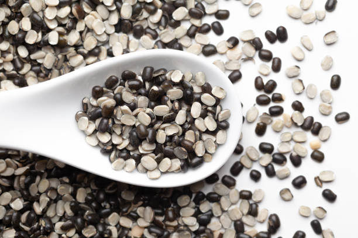
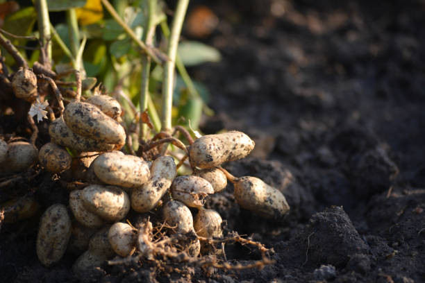
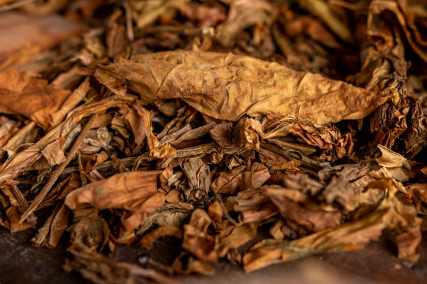
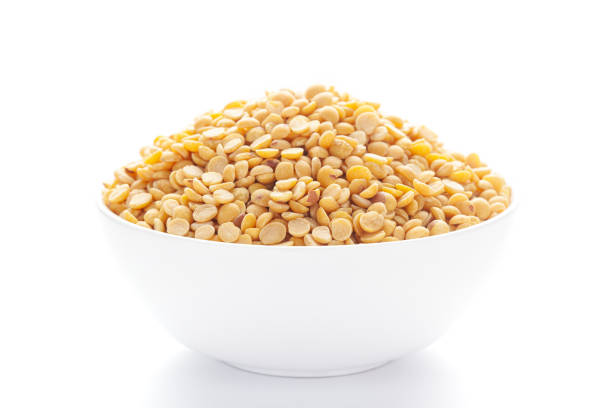
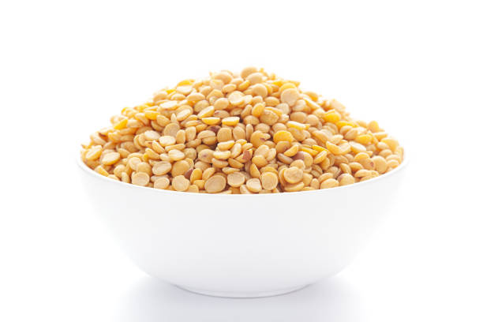

Urad (black gram) in Uttar Pradesh is primarily grown during the Kharif season, from June to September. The
largest market share and cultivation occur in states like Maharashtra and Karnataka. Urad thrives in
well-drained, sandy loam to loamy soils with a pH of 6.0 to 7.5. It prefers temperatures between 25-35°C and
is rich in protein, fiber, and vitamins. The growing period is about 70-90 days, requiring moderate water
and fertilizers. Demand is highest in states such as Maharashtra, Tamil Nadu, and Andhra Pradesh, where urad
is widely used in various dishes, including dals and snacks.
उत्तर प्रदेश में उड़द (काला चना) मुख्य रूप से जून से सितंबर
तक खरीफ मौसम के दौरान उगाया जाता है। सबसे बड़ा बाजार हिस्सा और खेती महाराष्ट्र और कर्नाटक जैसे राज्यों में
होती है। उड़द अच्छी तरह से सूखा हुआ, रेतीली दोमट से दोमट मिट्टी में पनपता है जिसका पीएच 6.0 से 7.5 है। यह
25-35 डिग्री सेल्सियस के बीच के तापमान को पसंद करता है और प्रोटीन, फाइबर और विटामिन से भरपूर होता है। बढ़ने
की अवधि लगभग 70-90 दिन है, जिसके लिए मध्यम पानी और उर्वरकों की आवश्यकता होती है। महाराष्ट्र, तमिलनाडु और
आंध्र प्रदेश जैसे राज्यों में इसकी मांग सबसे अधिक है, जहाँ दाल और स्नैक्स सहित विभिन्न व्यंजनों में उड़द का
व्यापक रूप से उपयोग किया जाता है।
6. MUSTARD / 6.सरसों
Mustard in Uttar Pradesh is primarily grown during the Rabi season, from October to March. The largest
market share and cultivation occur in Rajasthan and Haryana. Mustard thrives in well-drained, loamy to sandy
soils with a pH of 6.0 to 7.5. It prefers temperatures between 15-25°C and is rich in healthy fats, protein,
and vitamins. The growing period is about 3-4 months, requiring moderate water and fertilizers. Demand is
highest in states like Rajasthan, Punjab, and Madhya Pradesh, where mustard oil is a key cooking ingredient
and mustard seeds are used in various culinary applications.
उत्तर प्रदेश में सरसों मुख्य रूप से रबी के मौसम में अक्टूबर से
मार्च तक उगाई जाती है। सबसे ज़्यादा बाज़ार में इसकी हिस्सेदारी और खेती राजस्थान और हरियाणा में होती है। सरसों
6.0 से 7.5 के pH वाली अच्छी जल निकासी वाली, दोमट से लेकर रेतीली मिट्टी में पनपती है। यह 15-25 डिग्री सेल्सियस के
बीच के तापमान को पसंद करती है और स्वस्थ वसा, प्रोटीन और विटामिन से भरपूर होती है। इसकी उगने की अवधि लगभग 3-4
महीने होती है, जिसके लिए मध्यम पानी और उर्वरक की आवश्यकता होती है। राजस्थान, पंजाब और मध्य प्रदेश जैसे राज्यों
में इसकी मांग सबसे ज़्यादा है, जहाँ सरसों का तेल खाना पकाने का एक मुख्य घटक है और सरसों के बीजों का इस्तेमाल कई
तरह के पाक-कला में किया जाता है।
7. GROUNDNUT / 7.मूंगफली

Groundnut in Uttar Pradesh is primarily grown during the Kharif season (June to September). The state is a
significant producer, with a substantial market share in regions like Gujarat and Rajasthan, where it’s sold
and cultivated the most. Groundnuts thrive in well-drained sandy or loamy soils with a pH of 6.0 to 6.8.
Optimal soil temperature is around 25-30°C. Nutritional data shows high protein and healthy fats. Growing
requires about 90-120 days from sowing to harvest, along with adequate water and fertilizers. Demand is
highest in states like Maharashtra and Tamil Nadu.
उत्तर प्रदेश में मूंगफली मुख्य रूप से खरीफ सीजन (जून से सितंबर) के दौरान उगाई जाती है। यह राज्य एक महत्वपूर्ण
उत्पादक है, जिसका गुजरात और राजस्थान जैसे क्षेत्रों में पर्याप्त बाजार हिस्सा है, जहाँ इसे सबसे अधिक बेचा और
उगाया जाता है। मूंगफली 6.0 से 6.8 के पीएच के साथ अच्छी तरह से सूखा रेतीली या दोमट मिट्टी में पनपती है। इष्टतम
मिट्टी का तापमान लगभग 25-30 डिग्री सेल्सियस है। पोषण संबंधी डेटा उच्च प्रोटीन और स्वस्थ वसा दिखाते हैं।
पर्याप्त पानी और उर्वरकों के साथ बुवाई से कटाई तक लगभग 90-120 दिनों की आवश्यकता होती है। महाराष्ट्र और
तमिलनाडु जैसे राज्यों में मांग सबसे अधिक है।
8. SOYBEAN / 8.सोयाबीन
Soybean in Uttar Pradesh is primarily grown during the Kharif season (June to September). It is mostly
cultivated in Madhya Pradesh and Maharashtra, where it also has a larger market share. Soybeans thrive in
well-drained, fertile loamy or sandy soils with a pH of 6.0 to 7.5. Optimal soil temperature is around
20-30°C. Nutritional data indicates high protein content and essential fatty acids. The crop requires
approximately 90-150 days to mature, along with adequate water and fertilizers. Demand is particularly high in
states like Maharashtra, Gujarat, and Karnataka.
उत्तर प्रदेश में सोयाबीन मुख्य रूप से खरीफ सीजन (जून से सितंबर) के दौरान उगाया जाता है। इसकी खेती ज़्यादातर
मध्य प्रदेश और महाराष्ट्र में की जाती है, जहाँ इसका बाज़ार में बड़ा हिस्सा भी है। सोयाबीन अच्छी जल निकासी
वाली, उपजाऊ दोमट या रेतीली मिट्टी में पनपती है जिसका pH 6.0 से 7.5 होता है। इष्टतम मिट्टी का तापमान लगभग 20-30
डिग्री सेल्सियस होता है। पोषण संबंधी डेटा उच्च प्रोटीन सामग्री और आवश्यक फैटी एसिड को इंगित करता है। फसल को
पकने के लिए लगभग 90-150 दिन लगते हैं, साथ ही पर्याप्त पानी और उर्वरक की भी आवश्यकता होती है। महाराष्ट्र,
गुजरात और कर्नाटक जैसे राज्यों में इसकी मांग विशेष रूप से अधिक है।
9. SESAME / 9. तिल
Sesame in Uttar Pradesh is primarily grown during the Kharif season (June to September). The crop has a
notable market share in Gujarat and Rajasthan, where it is also cultivated the most. Sesame thrives in
well-drained sandy or loamy soils with a pH of 6.0 to 7.5. Optimal soil temperature ranges from 25-30°C.
Nutritional data shows high oil content and protein. The growing period is about 90-150 days, requiring
moderate water and fertilizers. Demand is particularly high in states like Tamil Nadu, Maharashtra, and
Gujarat, driven by its use in cooking and oil production.
उत्तर प्रदेश में तिल मुख्य रूप से खरीफ मौसम (जून से सितंबर) के
दौरान उगाया जाता है। गुजरात और राजस्थान में इस फसल का उल्लेखनीय बाजार हिस्सा है, जहाँ इसकी खेती भी सबसे अधिक
की जाती है। तिल 6.0 से 7.5 के पीएच के साथ अच्छी तरह से सूखा रेतीली या दोमट मिट्टी में पनपता है। इष्टतम मिट्टी
का तापमान 25-30 डिग्री सेल्सियस के बीच होता है। पोषण संबंधी डेटा उच्च तेल सामग्री और प्रोटीन दिखाते हैं। बढ़ने
की अवधि लगभग 90-150 दिन है, जिसके लिए मध्यम पानी और उर्वरकों की आवश्यकता होती है। खाना पकाने और तेल उत्पादन
में इसके उपयोग के कारण तमिलनाडु, महाराष्ट्र और गुजरात जैसे राज्यों में इसकी मांग विशेष रूप से अधिक है।
10. COTTON / 10.कपास


Cotton in Uttar Pradesh is primarily grown in the kharif season, from June to October. The state produces a
significant share of India’s cotton, with major markets in Maharashtra and Gujarat. Cotton thrives in
well-drained, sandy loam to clay loam soils with a pH of 6-8. Ideal soil temperatures range from 20°C to 30°C.
It requires around 5-6 months to mature, with resources including water, fertilizers, and pest control. High
demand for Uttar Pradesh cotton is seen in textile hubs like Tamil Nadu and Gujarat, where it supports the
thriving garment industry.
उत्तर प्रदेश में कपास मुख्य रूप से जून से अक्टूबर तक खरीफ मौसम
में उगाया जाता है। यह राज्य भारत के कपास का एक महत्वपूर्ण हिस्सा पैदा करता है, जिसके प्रमुख बाजार महाराष्ट्र
और गुजरात में हैं। कपास अच्छी तरह से सूखा हुआ, रेतीली दोमट से लेकर चिकनी दोमट मिट्टी में पनपता है जिसका pH 6-8
होता है। आदर्श मिट्टी का तापमान 20°C से 30°C तक होता है। इसे पकने में लगभग 5-6 महीने लगते हैं, जिसमें पानी,
उर्वरक और कीट नियंत्रण जैसे संसाधन शामिल हैं। उत्तर प्रदेश के कपास की उच्च मांग तमिलनाडु और गुजरात जैसे कपड़ा
केंद्रों में देखी जाती है, जहाँ यह संपन्न परिधान उद्योग का समर्थन करता है।
11. JUTE / 11.जूट

Jute in Uttar Pradesh is primarily grown in the kharif season, from June to October. The state contributes to
India’s jute production, with major cultivation in West Bengal. Jute thrives in alluvial soils rich in organic
matter and requires a pH of 6-8. Optimal soil temperatures range from 20°C to 35°C. It takes about 4-6 months
to mature, needing sufficient water, fertilizers, and pest management. Demand is particularly high in states
like West Bengal and Odisha, where jute fibers are essential for packaging, textiles, and eco-friendly
products.
उत्तर प्रदेश में जूट मुख्य रूप से जून से अक्टूबर तक खरीफ मौसम
में उगाया जाता है। यह राज्य भारत के जूट उत्पादन में योगदान देता है, जिसकी मुख्य खेती पश्चिम बंगाल में होती है।
जूट कार्बनिक पदार्थों से भरपूर जलोढ़ मिट्टी में पनपता है और इसके लिए 6-8 के पीएच की आवश्यकता होती है। इष्टतम
मिट्टी का तापमान 20 डिग्री सेल्सियस से 35 डिग्री सेल्सियस तक होता है। इसे पकने में लगभग 4-6 महीने लगते हैं,
इसके लिए पर्याप्त पानी, उर्वरक और कीट प्रबंधन की आवश्यकता होती है। पश्चिम बंगाल और ओडिशा जैसे राज्यों में इसकी
मांग विशेष रूप से अधिक है, जहाँ पैकेजिंग, कपड़ा और पर्यावरण के अनुकूल उत्पादों के लिए जूट के रेशे आवश्यक हैं।
12. SUGARCANE / 12.गन्ना


Sugarcane in Uttar Pradesh is primarily grown in the kharif season, from July to February. Uttar Pradesh is
the leading producer of sugarcane in India, contributing significantly to the market. It thrives in fertile,
well-drained alluvial soils with a pH of 6-8. Optimal soil temperatures range from 20°C to 30°C. The crop
takes about 10-12 months to mature, requiring substantial water, fertilizers, and pest control. Demand for
sugarcane is particularly high in states like Maharashtra and Karnataka, where it supports the sugar and
ethanol industries.
उत्तर प्रदेश में गन्ना मुख्य रूप से खरीफ सीजन में जुलाई से
फरवरी तक उगाया जाता है। उत्तर प्रदेश भारत में गन्ने का अग्रणी उत्पादक है, जो बाजार में महत्वपूर्ण योगदान देता
है। यह उपजाऊ, अच्छी तरह से सूखा जलोढ़ मिट्टी में पनपता है जिसका पीएच 6-8 होता है। इष्टतम मिट्टी का तापमान 20
डिग्री सेल्सियस से 30 डिग्री सेल्सियस तक होता है। फसल को पकने में लगभग 10-12 महीने लगते हैं, जिसके लिए
पर्याप्त पानी, उर्वरक और कीट नियंत्रण की आवश्यकता होती है। महाराष्ट्र और कर्नाटक जैसे राज्यों में गन्ने की
मांग विशेष रूप से अधिक है, जहां यह चीनी और इथेनॉल उद्योगों का समर्थन करता है।
13. TOBACCO / 13.तम्बाकू


Tobacco in Uttar Pradesh is primarily grown in the kharif season, from June to October. The state has a
notable share in India’s tobacco production, though the largest cultivation occurs in Andhra Pradesh. Tobacco
thrives in sandy loam or loamy soils with good drainage and a pH of 5.5-7.0. Ideal soil temperatures range
from 20°C to 30°C. It takes about 4-6 months to mature, requiring moderate water, fertilizers, and pest
management. Demand for tobacco is particularly high in states like Karnataka and Andhra Pradesh, where it
supports extensive bidi and cigarette industries.
उत्तर प्रदेश में तम्बाकू मुख्य रूप से जून से अक्टूबर तक खरीफ
मौसम में उगाया जाता है। भारत के तम्बाकू उत्पादन में राज्य का उल्लेखनीय हिस्सा है, हालांकि सबसे बड़ी खेती आंध्र
प्रदेश में होती है। तम्बाकू रेतीली दोमट या दोमट मिट्टी में अच्छी जल निकासी और 5.5-7.0 पीएच के साथ पनपता है।
आदर्श मिट्टी का तापमान 20 डिग्री सेल्सियस से 30 डिग्री सेल्सियस तक होता है। इसे पकने में लगभग 4-6 महीने लगते
हैं, जिसके लिए मध्यम पानी, उर्वरक और कीट प्रबंधन की आवश्यकता होती है। तम्बाकू की मांग विशेष रूप से कर्नाटक और
आंध्र प्रदेश जैसे राज्यों में अधिक है, जहाँ यह व्यापक बीड़ी और सिगरेट उद्योगों का समर्थन करता है।

 
